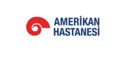
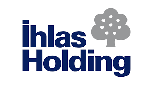
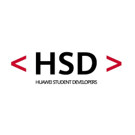

Bilgisayar Mühendisliği Öğrencisi | HSD Atlas Sosyal Medya ve İçerik Komite Lideri
İstanbul Atlas Üniversitesi Bilgisayar Mühendisliği 3. sınıf öğrencisiyim. Staj deneyimlerim aracılığıyla BT süreçleri, siber güvenlik alanlarında kendimi geliştirmeye devam etmekteyim.

Haziran 2025 – Ağustos 2025
Sistem sürekliliğini ve yüksek kullanılabilirliği sağlamak için BT altyapı yönetimini ve operasyonel iş akışlarını gözlemlemek.
Son kullanıcıların donanım, yazılım ve ağ ile ilgili sorunlarını teşhis etmek ve çözmek için teknik destek ekibiyle iş birliği yapmak.

Kasım 2025 – Ocak 2026
Kurumsal güvenlik politikalarıyla uyumlu olarak yürütülen siber güvenlik denetimlerine ve risk değerlendirmelerine destek vermek.
Olay müdahale (incident response) planlarını izlemek; siber tehditlerin azaltılmasına yönelik dokümantasyon iş akışları hakkında uygulamalı deneyim kazanmak.

Ekim 2025 – Halen
İçerik oluşturma süreçlerine liderlik etmek, ekip görev dağılımını ve stratejik planlamayı yönetmek.
Topluluk ilgi alanlarına özel stratejik öneriler sunmak amacıyla paylaşılan içeriklerin etkileşimlerini analiz edip sosyal medya gönderileri düzenlemek.